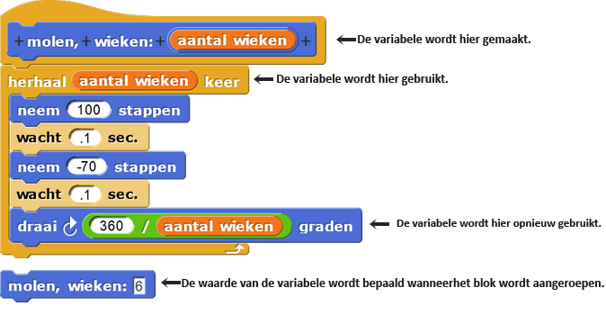
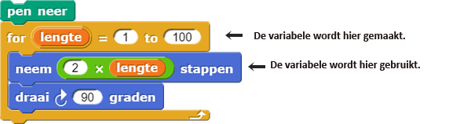

Programmeer een raad-het-getalspel met script-variabelen
In deze les, ga je twee verschillende variabelen gebruiken om informatie op te slaan:
- Een script-variabele (een soort lokale variabele) die alleen binnen één script kan worden gebruikt.
- Een globale variabele die je kunt plaatsen, gebruiken of veranderen waar dan ook in je project.
Op deze pagina, ga je een Raad-het-getalspel bouwen dat een script-variabele gebruikt om een geheim getal te onthouden.
Gebruik een script-variabele (een lokale variabele)
Je hebt al met variabelen gewerkt. De invoer voor zelfgemaakte blokken is een voorbeeld hiervan:

Je hebt ook gebruik gemaakt van een variabele toen je met het voorblok aan de slag
ging:

Invoervariabelen en voorvariabelen behoren allebei tot de lokale variabelen;
deze werken alleen binnen het script waarin ze aangemaakt zijn. Als je deze variabelen naar een ander script
zou slepen, zal het niet werken. Soms is het nodig om meer variabelen te maken die informatie
tijdelijk opslaan terwijl je script aan het runnen is. Het script-variabelenblok zorgt
daarvoor.

Stel je een Raad-het-getalspel voor waarbij een speler het geheime getal van een computer probeert te raden. De computer moet dit geheime getal bedenken en ergens opslaan, zodat het dit getal kan vergelijken met wat de speler denkt het juiste getal is. Wanneer het spel voorbij is, is het geheime getal niet meer nodig. Als je een nieuw potje spel wilt spelen, heb je een nieuw geheim getal nodig.
Een variabele die alleen aangeroepen of gebruikt kan worden in de omgeving waarin hij is aangemaakt. Dit
is de gebruikelijke term in de informatica voor 'variabele' die omschreven worden als invoer
voor functies, of (in Snap! en sommige andere programmeertalen) die gemaakt worden door blokken
als
voor of script-variabelen.
-
"H2L1-RaadHetGetal"

- Maak een nieuw commando-blok genaamd
Raad-het-getalspel. - Maak in dit blok een script-variabele genaamd geheim getal (instructies hieronder), en
zorg dat het een willekeurig getal tussen 1 en 10 is.
Maak een Script-Variabele
- Plaats een
script-variabeleblok in je werkblad. Dit blok kun je vinden in je Variabelen-palet.
- Geef de variabele een naam door op de oranje a te klikken aan het eind, en dan de naam die je wilt te typen. In dit geval, kan je de variabele geheim getal noemen.
script variabelenblok te slepen, net zoals hoe je een invoervariabele naar een ander blok sleept. - Plaats een
- Gebruik
maakom de beginwaarde van je variabele in te stellen. Als je op het kleine driehoekje naar beneden klikt, kan je je de variabele kiezen die je wilt initialiseren. Schrijf code die een geheim getal initialiseert met een willekeurig getal tussen de 1 en 10.

De beginwaarde van een variabele bepalen noemen we het initialiseren van de variabele.
maakblok wanneer het maakblok in hetzelfde script staat als het
script-variabelenblok waarmee geheim getal aangemaakt wordt.
Check het getal van de speler
Wat je graag wilt, is dat de computer net zo lang blijft vragen om getallen, totdat het geheime getal
geraden is. Om dat te doen, ga je het herhaal tot blok gebruiken. Herhaal tot is
een herhalingblok (net als herhaal, herhaal ... keer, en
voor) dat iets herhaalt totdat er aan een bepaalde voorwaarde is
voldaan. In dit geval, moet de code herhaald worden totdat het antwoord van de speler gelijk is
aan het geheime getal.
Herhaal tot is een voorwaardelijk blok (net als als). Voorwaardelijke
blokken maken keuzes gebaseerd op een voorwaarde in de vorm van een Boolean
waarde (of
 of
).
De voorwaarde wordt gecheckt door een predikaat, een waar/niet-waar vraag zoals
of
).
De voorwaarde wordt gecheckt door een predikaat, een waar/niet-waar vraag zoals
 . Predikaten rapporteren
altijd Boolean waardes. Predikaten passen in een zeshoekig invoervak, zoals in
. Predikaten rapporteren
altijd Boolean waardes. Predikaten passen in een zeshoekig invoervak, zoals in
 en
en
 . Predikaten
helpen voorwaardelijke blokken te bepalen wanneer ze iets moeten doen.
. Predikaten
helpen voorwaardelijke blokken te bepalen wanneer ze iets moeten doen.
Een Boolean waarde is óf Waar óf Niet Waar. Het woord Boolean begint met een hoofdletter, omdat het vernoemd is naar een persoon, George Boole, die binnen de wiskunde de tak van Boolean functies heeft uitgevonden (zoals
en, of, en
niet).
- Gebruik
herhaal totom aan de speler tevragenhet geheime getal te raden totdat hetantwoordgelijk is aan geheime getal. - Sleep het geheime getal-variabele uit het
script-variabelenblok om het te gebruiken. - De
en
 blokken horen bij elkaar. Als je
blokken horen bij elkaar. Als je vraaggebruikt om een vraag te stellen, zal het antwoord van de speler opgeslagen worden doorantwoord. - Zodra de speler het goede antwoord heeft geraden, zorg ervoor dat de computer de speler feliciteert.
- Test en debug. Speel om de beurt het spel, en fix alle problemen binnen de code die je tegenkomt voordat je verder gaat.
- Wanneer de computer de speler feliciteert omdat hij/zij het geheime getal goed heeft geraden, laat dan de computer het geheime getal nog eens zeggen. Bijvoorbeeld, het zou kunnen zeggen "Je hebt het geraden! Mijn geheime getal was '7'".
voeg ... samen om de tekst "Je hebt het geraden! Mijn geheime getal was.."
samen te voegen met de waarde van de geheime getal variabele.